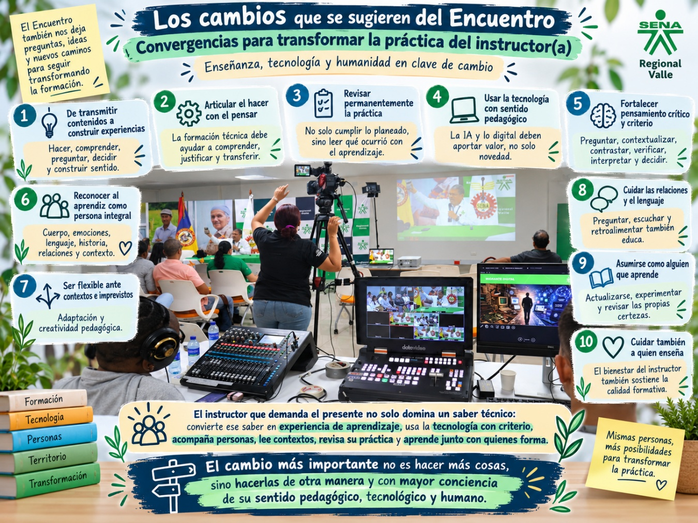

Diálogos y cruces
6. Encuentro de los tres ejes
Las relaciones entre enseñanza, tecnología y humanidad permiten reconocer coincidencias, diferencias y tensiones sin reducirlas a una única respuesta.
6. Encuentro de los tres ejes
Al poner en diálogo los ejes de Enseñanza, Tecnología y Humanidad, emergen relaciones, tensiones y preguntas comunes que permiten comprender el Encuentro como una conversación pedagógica integrada y no como tres reflexiones aisladas.
6.1. Enseñanza y transformación tecnológica
En el contexto de estas relaciones, al interceptar los ejes temáticos del Encuentro, aparece una primera tensión: las tecnologías cambian con gran velocidad, pero las formas de enseñar no necesariamente cambian al mismo ritmo. La incorporación de plataformas, ambientes virtuales o inteligencia artificial puede modificar los medios disponibles sin transformar, por sí sola, la práctica pedagógica. Como plantea Héctor Fabio Hoyos, en ocasiones simplemente “digitalizamos lo que teníamos”.
La inteligencia artificial profundiza esta cuestión porque modifica nuestra relación con la información. La red ya no solo permite buscar contenidos: ahora puede responder, resumir, reorganizar y producir información. Frente a ello, enseñar comienza a desplazarse de la transmisión y acumulación de contenidos hacia capacidades como interrogar, contextualizar, contrastar, verificar, interpretar y crear.
Este cambio también interpela el lugar del instructor. Cuando una respuesta puede obtenerse en segundos, su papel adquiere mayor relevancia en la construcción de experiencias de aprendizaje, el acompañamiento, la formulación de buenas preguntas y la formación de criterio. Las voces del Encuentro insisten así en que la tecnología debe fortalecer los procesos formativos y no sustituir la reflexión pedagógica ni la relación entre instructor y aprendiz.
Pero la transformación tecnológica no es neutral. La perspectiva de Ricardo Rengifo introduce preguntas sobre los datos, los algoritmos, los sesgos, la clasificación y las relaciones de poder que intervienen en aquello que vemos, conocemos y decidimos. Formar para un mundo atravesado por inteligencia artificial supone entonces no solo aprender a utilizar herramientas, sino también comprender críticamente cómo funcionan y qué efectos pueden producir.
En este cruce también reaparece una preocupación proveniente del Eje Humanidad: la formación no ocurre solamente entre información y dispositivos. Quienes enseñan y aprenden lo hacen desde un cuerpo, unas emociones, un lenguaje, unas experiencias y unas relaciones concretas. La transformación tecnológica plantea, por tanto, el desafío de innovar sin perder aquello que hace de la enseñanza una experiencia humana.
6.2. Tecnología y condición humana
Al poner en relación las discusiones sobre inteligencia artificial con el Eje Humanidad, aparece una cuestión de fondo: la transformación tecnológica no modifica solamente las herramientas que usamos, sino también las maneras de percibirnos, relacionarnos, decidir y actuar. La IA entra en espacios que antes asociábamos de forma casi exclusiva con capacidades humanas, como conversar, interpretar, recomendar, anticipar decisiones o producir lenguaje.
Desde la perspectiva de Ricardo Rengifo, los sistemas algorítmicos no son neutrales. Al clasificar, predecir y perfilar comportamientos, participan en la construcción de subjetividades y pueden influir en aquello que vemos, elegimos o consideramos posible. La pregunta tecnológica se convierte así también en una pregunta por la autonomía, el poder y la capacidad de decisión de las personas.
La intervención de Héctor Fabio Hoyos añade otra tensión: una inteligencia artificial puede producir respuestas fluidas, adoptar un tono cercano e incluso parecer empática, pero esto no significa necesariamente que comprenda, sienta o tenga conciencia. Esta distinción resulta importante porque nuestra tendencia a atribuir rasgos humanos a las máquinas puede modificar la forma en que nos relacionamos con ellas y el lugar que les concedemos en nuestras decisiones.
Las reflexiones de Sandra Ramón permiten mirar este problema desde otro lugar. Si la experiencia humana se construye en la relación entre cuerpo, emoción y lenguaje, entonces aprender y enseñar no pueden reducirse al intercambio de información. La postura, los gestos, las emociones, la escucha, las palabras y las relaciones también participan de la formación.
Aquí aparece un contraste significativo: mientras la inteligencia artificial puede simular lenguaje, cercanía o empatía, la experiencia humana está atravesada por un cuerpo que siente, por emociones vividas y por relaciones construidas con otros. El lenguaje, además, no solo comunica información: puede abrir posibilidades, establecer compromisos, afectar vínculos y transformar la manera como una persona se comprende a sí misma y a los demás.
Este cruce invita a preguntarse también por el papel de la tecnología en las relaciones educativas. Si una herramienta puede responder de inmediato, orientar una búsqueda o producir un texto, el desafío no consiste solamente en aprovechar su eficiencia, sino en decidir qué relaciones queremos preservar, qué decisiones no queremos delegar y qué dimensiones humanas deseamos fortalecer.
De esta conversación entre Tecnología y Humanidad emerge, entonces, una tensión central: cuanto mayor es la capacidad de las máquinas para producir respuestas y simular formas de interacción humana, más importante resulta preguntarnos qué significa comprender, sentir, decidir, relacionarse y asumir responsabilidad.
6.3. Ser instructor(a) en la intersección de enseñanza, tecnología y humanidad
Al poner en relación el Eje Enseñanza con el Eje Humanidad, aparece una pregunta central: ¿qué hace que enseñar tenga sentido? Las intervenciones del Encuentro sugieren que la formación no puede reducirse al cumplimiento de actividades, la transmisión de contenidos o la correcta ejecución de procedimientos. Enseñar implica formar sujetos, acompañar experiencias y construir relaciones significativas con quienes aprenden.
Desde el Eje Enseñanza, David Novoa recuerda que enseñar un oficio no consiste únicamente en enseñar a hacer. La Formación Profesional Integral articula teoría y práctica, mente y cuerpo, saber técnico y experiencia. El “hacer” tiene valor formativo cuando permite comprender, decidir y actuar, y no solamente repetir una tarea.
Luz Alsivia Romero lleva esta reflexión hacia el sentido de ese hacer. Su intervención cuestiona una educación convertida en una sucesión de actividades y tareas. Cumplir una actividad no significa necesariamente que haya ocurrido una experiencia formativa. La pregunta pasa entonces de “¿se hizo lo planeado?” a “¿qué ocurrió con el aprendiz?, ¿pensó?, ¿comprendió?, ¿encontró sentido?”
El Eje Humanidad amplía esta mirada al mostrar que quien aprende no es solamente alguien que procesa información. Es una persona que tiene cuerpo, emociones, lenguaje, historia y relaciones. La reflexión de Sandra Ramón hace visible que estas dimensiones participan activamente en la experiencia de aprender y, por tanto, también deben ser consideradas en la enseñanza.
Esto modifica también la manera de comprender al instructor. Enseñar no consiste solo en dominar un saber técnico, sino en observar, escuchar, preguntar, acompañar y reconocer al otro. Una pregunta inesperada, una emoción, un gesto corporal o una dificultad del aprendiz pueden convertirse en oportunidades pedagógicas si el instructor es capaz de leerlas y darles lugar.
Las experiencias compartidas en el Eje Humanidad muestran, además, que la enseñanza sucede en condiciones concretas y muchas veces imprevisibles. Los territorios, las limitaciones de recursos, las dificultades personales y las situaciones inesperadas obligan al instructor a adaptar su práctica, crear alternativas y sostener el vínculo pedagógico.
En este cruce aparece también el cuidado como parte de la enseñanza. Cuidar no significa disminuir la exigencia formativa, sino reconocer las condiciones humanas desde las cuales se aprende y se enseña. Esto incluye tanto al aprendiz como al propio instructor, que también siente, se cansa, se transforma y necesita encontrar sentido en su labor.
El diálogo entre ambos ejes permite interpretar que la Formación Profesional Integral cobra sentido cuando el saber técnico, el hacer y la experiencia humana permanecen conectados. No se trata únicamente de formar personas capaces de desempeñar una ocupación, sino de propiciar experiencias en las que puedan pensar, comprender, decidir, relacionarse y construir sentido sobre lo que hacen.

7. Coincidencias, diferencias y tensiones
A continuación, se responde, de manera explícita, a las preguntas orientadoras de la sistematización.
7.1. ¿Qué hay en común?
Al poner en relación las distintas intervenciones del Encuentro, aparecen preocupaciones que atraviesan los tres ejes (Enseñanza, Tecnología y Humanidad), aunque cada ponente y cada participante las aborde desde lugares diferentes.
No se trata de afirmar que todos sostienen una misma posición, sino de reconocer asuntos que reaparecen y que permiten construir una conversación común, ya que el propósito es identificar coincidencias, diferencias, tensiones y preguntas sin borrar la singularidad de las voces:
La enseñanza está atravesando una transformación. Desde diferentes perspectivas aparece la percepción de que enseñar hoy exige revisar prácticas que durante mucho tiempo parecieron estables. Cambian el mundo del trabajo, las tecnologías, las formas de acceder al conocimiento y las experiencias de los aprendices. En consecuencia, también se transforma la pregunta por aquello que significa enseñar.
El instructor no puede reducirse a ser transmisor de información. Esta preocupación reaparece en distintos momentos del Encuentro. El instructor es presentado como alguien que construye experiencias, acompaña, pregunta, orienta, ayuda a comprender y crea condiciones para que el aprendiz pueda actuar con mayor autonomía. La disponibilidad creciente de información y de respuestas producidas por la IA hace todavía más visible este desplazamiento.
Hacer una actividad no significa necesariamente aprender. En el diálogo entre las intervenciones emerge una preocupación por el sentido de la experiencia formativa. Enseñar un oficio no consiste solamente en repetir procedimientos, así como cumplir una actividad no garantiza comprensión. La formación adquiere mayor profundidad cuando el hacer permite pensar, interpretar, reflexionar, decidir y comprender aquello que se está haciendo.
El pensamiento crítico y la construcción de criterio adquieren un lugar central. Frente a la abundancia de información, las respuestas automáticas y los sistemas capaces de recomendar, clasificar o producir contenidos, distintas voces coinciden en la necesidad de fortalecer la capacidad de preguntar, contrastar, interpretar, verificar y tomar decisiones. El reto deja de ser solamente acceder al conocimiento y pasa también por saber qué hacer con él.
La tecnología, por sí sola, no transforma la educación. El Encuentro muestra reiteradamente que incorporar herramientas nuevas no garantiza una práctica pedagógica diferente. La tecnología requiere decisiones sobre su sentido, sus usos y sus límites. También exige preguntarse por sus efectos sobre el conocimiento, las relaciones, la autonomía, la privacidad y las decisiones humanas.
La formación sigue siendo una experiencia profundamente humana. El cuerpo, las emociones, el lenguaje, los vínculos y las historias personales aparecen como dimensiones que no pueden quedar fuera de la reflexión pedagógica. El aprendiz no es únicamente alguien que recibe información o desarrolla una competencia: es una persona situada, que siente, interpreta, se relaciona y construye sentido. Lo mismo ocurre con quien enseña.
El contexto importa. Las voces de los participantes recuerdan que la enseñanza no ocurre en abstracto. Los territorios, las condiciones sociales, los recursos disponibles, las características de los aprendices y las realidades del sector productivo intervienen en lo que es posible hacer. Por ello, formar también exige leer el contexto y adaptar la práctica.
Enseñar implica también aprender y transformarse. A lo largo del Encuentro aparece un instructor icónico que no posee respuestas definitivas, sino que necesita actualizarse, revisar sus prácticas y aprender de las situaciones que enfrenta. La transformación educativa compromete, por tanto, tanto al aprendiz como a quien acompaña su proceso.
La pregunta ética atraviesa los tres ejes. Aunque aparezca con diferentes énfasis, permanece la preocupación por las consecuencias de aquello que hacemos: qué enseñamos, para qué lo enseñamos, cómo usamos la tecnología, qué decisiones delegamos y qué efectos producen nuestras palabras, prácticas y herramientas sobre otras personas.
Del diálogo entre estas perspectivas en los tres ejes, puede reconocerse que el Encuentro comparte una preocupación de fondo respecto al cómo preservar y renovar el sentido de la formación en un momento de profundas transformaciones tecnológicas, sociales y culturales.
7.2. ¿En qué se coincide?
Las intervenciones del Encuentro parten de lugares distintos: unas se ocupan de la enseñanza de los oficios, otras cuestionan el sentido de las prácticas pedagógicas, algunas problematizan la inteligencia artificial y otras ponen en primer plano el cuerpo, las emociones y la experiencia de ser instructor(a). Sin embargo, al ponerlas en relación, pueden reconocerse varios puntos de encuentro. Esta lectura no supone que todos los participantes sostengan exactamente las mismas ideas, sino que sus perspectivas convergen alrededor de ciertas preocupaciones pedagógicas.
Enseñar es más que transmitir información. Desde diferentes perspectivas aparece una comprensión de la enseñanza como un proceso que requiere acompañar, orientar, generar experiencias y crear condiciones para que el aprendiz pueda comprender y actuar. Esta idea adquiere especial relevancia frente a tecnologías capaces de entregar información y respuestas de manera inmediata.
El aprendiz necesita participar activamente en su formación. Las voces coinciden en cuestionar una formación centrada únicamente en recibir contenidos o cumplir actividades. Aprender implica hacer, preguntar, interpretar, contrastar, decidir y construir sentido sobre aquello que se está aprendiendo.
El instructor continúa siendo fundamental, pero su papel se transforma. No aparece solamente como experto que posee y transmite respuestas. Se fortalece su función como mediador, orientador, constructor de experiencias para enseñar y acompañante del aprendizaje, capaz de leer las situaciones y ayudar a construir criterio.
La tecnología debe estar al servicio de la formación. Las intervenciones no conducen a rechazar la tecnología, pero tampoco a incorporarla de manera automática. Hay coincidencia en la necesidad de preguntarse para qué se utiliza, qué aporta al aprendizaje y qué consecuencias puede tener. Una herramienta nueva no garantiza por sí misma una pedagogía diferente.
Pensamiento crítico y criterio se vuelven capacidades esenciales. Frente a la abundancia de información, la producción automatizada de respuestas y los sistemas que clasifican o recomiendan, varias voces convergen en la importancia de formar personas capaces de preguntar, contrastar, verificar, interpretar y decidir.
La formación debe conservar su dimensión humana. Los debates sobre inteligencia artificial encuentran aquí un punto de contacto con las reflexiones sobre cuerpo, emoción y lenguaje. Aunque cambien las herramientas, enseñar y aprender siguen ocurriendo entre personas con historias, emociones, experiencias y relaciones concretas.
El contexto es parte de la enseñanza. Las intervenciones de instructores y participantes muestran que no existe una práctica pedagógica idéntica para todas las situaciones. Los territorios, los recursos disponibles, las características de los aprendices y las necesidades del mundo productivo exigen leer el contexto y adaptar las formas de enseñar.
La práctica del instructor requiere aprendizaje permanente. Ante transformaciones tecnológicas, sociales y laborales aceleradas, aparece una coincidencia en la necesidad de revisar continuamente los propios saberes y prácticas. El instructor no solo forma, sino que también aprende, se adapta y se transforma.
Lo técnico y lo humano no deberían separarse. Las perspectivas del Encuentro terminan encontrándose en una idea importante para la Formación Profesional Integral: desarrollar capacidades técnicas no excluye formar autonomía, responsabilidad, sensibilidad, pensamiento crítico y capacidad de relacionarse con otros. El hacer adquiere mayor sentido cuando está acompañado de comprensión y criterio.
Se denota que existen dos coincidencias especialmente significativas:
La transformación de la enseñanza no depende únicamente de incorporar nuevas tecnologías o metodologías, sino de revisar el sentido de lo que hacemos con ellas y de mantener al aprendiz y su proceso de formación en el centro.
Formar personas capaces de hacer, pensar, decidir y relacionarse con criterio en contextos que están cambiando rápidamente.
7.3. ¿En qué se diferencian?
Los participantes del Encuentro no plantean una única manera de comprender la enseñanza, la tecnología o la condición humana. Sus diferencias son parte de la riqueza de la conversación y no necesitan resolverse en una posición común. Más bien permiten mirar la formación desde problemas y niveles distintos:
Distintas maneras de comprender la enseñanza. En David Novoa, la reflexión se concentra en la relación entre hacer y pensar, los saberes propios de los oficios y las transformaciones históricas de la formación para el trabajo. Luz Alsivia Romero, en cambio, desplaza la atención hacia el sentido que adquiere la experiencia de enseñar y aprender. Una perspectiva interroga qué significa formar en un oficio; la otra obliga a preguntarse cuándo una práctica educativa conserva o pierde sentido.
Dos aproximaciones diferentes a la inteligencia artificial. Ricardo Rengifo aborda la IA desde las relaciones entre poder y saber. Su interés está en los algoritmos como dispositivos que clasifican, predicen y participan en la producción de determinadas formas de verdad y de subjetividad. Héctor Fabio Hoyos se aproxima más directamente a sus consecuencias para la práctica pedagógica, el aprendizaje y el papel del instructor. Ambas miradas son críticas, pero parten de preguntas distintas.
La tecnología puede aparecer como posibilidad y también como problema. Algunas voces destacan las oportunidades que ofrecen la IA, la virtualidad y otras tecnologías para ampliar las formas de aprender. Otras llaman la atención sobre los sesgos, la vigilancia, la privacidad, la dependencia o las relaciones de poder que pueden acompañarlas. Conservar ambas perspectivas evita tanto el entusiasmo tecnológico acrítico como su rechazo automático.
No todas las intervenciones sitúan la transformación en el mismo lugar. Para unas, el cambio debe ocurrir principalmente en las prácticas de enseñanza; para otras, es necesario examinar los sistemas tecnológicos y las relaciones sociales que los producen. Desde el Eje Humanidad, el desplazamiento se dirige hacia la propia persona: su cuerpo, emociones, lenguaje y relaciones.
También cambia la manera de entender al sujeto que aprende. En unas intervenciones aparece con mayor fuerza el aprendiz que hace, comprende y desarrolla un oficio; en otras, el sujeto que debe aprender a interrogar y evaluar información; y desde el Eje Humanidad, la persona que aprende desde un cuerpo, unas emociones, un lenguaje y una historia. Estas aproximaciones no se excluyen, pero tampoco son equivalentes.
El papel del instructor recibe énfasis diferentes. Puede aparecer como experto en un saber técnico, como diseñador de experiencias, como mediador frente a la información, como orientador del pensamiento crítico o como alguien cuya presencia, lenguaje y disposición emocional afectan la formación. El Encuentro no sustituye una figura por otra; muestra la creciente complejidad del oficio de ser instructor(a).
Las escalas desde las cuales se mira la formación son distintas. Algunas intervenciones parten de grandes transformaciones históricas o tecnológicas; otras observan las relaciones de poder que atraviesan la sociedad; y otras comienzan en situaciones muy próximas: un gesto, una emoción, una conversación, una dificultad del aprendiz o una experiencia cotidiana en el territorio. Esta diversidad de escalas amplía la comprensión de lo pedagógico.
También hay distintas maneras de comprender qué debe preservarse frente al cambio. Algunos participantes ponen el acento en conservar y renovar los saberes del hacer; otras, en fortalecer el criterio frente a la tecnología; otras, en proteger la autonomía frente al poder algorítmico; y otras, en cuidar los vínculos, las emociones y la experiencia humana que hacen posible la formación.
Estas diferencias permiten reconocer que los retos actuales de la formación pueden ser observados desde el oficio, el sentido pedagógico, la tecnología, el poder, el conocimiento, el cuerpo o las relaciones humanas.
7.4. Tensiones que permanecen abiertas
El Encuentro no resuelve todas las preguntas ni las tensiones que plantea. Por el contrario, al poner en relación los aportes de los tres ejes aparecen tensiones que conviene conservar abiertas, porque expresan dilemas reales de la formación y no problemas que puedan solucionarse mediante una respuesta única. La sistematización, precisamente, busca hacer visibles estos contrastes sin convertir una perspectiva en la conclusión definitiva del Encuentro.
Entre enseñar a hacer y enseñar a pensar sobre lo que se hace. La formación para el trabajo necesita desarrollar capacidades concretas para desempeñarse en oficios y ocupaciones, pero también requiere comprensión, criterio y capacidad de decisión. Permanece abierta la pregunta por cómo articular el saber hacer con la reflexión sobre el sentido, las consecuencias y los contextos de ese hacer.
Entre cumplir la formación y construir experiencias con sentido. Planeaciones, actividades, resultados de aprendizaje y procedimientos son necesarios para organizar la formación, pero su cumplimiento no garantiza por sí mismo que exista comprensión. Surge así una tensión entre hacer lo previsto y atender aquello que realmente está ocurriendo con el aprendiz y su proceso formativo.
Entre incorporar tecnología y transformar la pedagogía. Disponer de nuevas herramientas no significa necesariamente enseñar de una manera diferente. Como advierte Héctor Fabio Hoyos, existe el riesgo de simplemente “digitalizar lo que teníamos”. La tensión permanece entre actualizar los medios y transformar verdaderamente las experiencias de aprendizaje.
Entre las posibilidades de la IA y la mirada crítica sobre sus efectos. La inteligencia artificial puede ampliar el acceso a información, facilitar tareas y abrir posibilidades de creación. Al mismo tiempo, la perspectiva de Ricardo Rengifo introduce preguntas sobre sesgos, clasificación, vigilancia, poder y producción de saber. El Encuentro deja abierta la tensión entre aprovechar las capacidades tecnológicas y examinar críticamente las relaciones que producen.
Entre delegar en la tecnología y conservar la autonomía humana. Cuando una IA puede responder, recomendar, organizar información o sugerir decisiones, aparece la pregunta por aquello que estamos dispuestos a delegar. El desafío no es solamente utilizar estas herramientas, sino determinar dónde debe permanecer el juicio, la responsabilidad y la decisión de las personas.
Entre la apariencia de humanidad de la IA y la experiencia humana. Una máquina puede producir lenguaje fluido e incluso parecer empática. Sin embargo, Hoyos advierte sobre la diferencia entre esa capacidad de respuesta y la conciencia o la experiencia subjetiva. Esta cuestión entra en diálogo con Sandra Ramón, para quien la experiencia humana está atravesada por cuerpo, emoción y lenguaje. La tensión invita a preguntarse qué aspectos de la relación educativa pueden ser mediados por una máquina y cuáles adquieren sentido precisamente por ocurrir entre personas.
Entre la velocidad tecnológica y los tiempos de la formación. Las tecnologías cambian rápidamente, mientras los procesos pedagógicos, curriculares e institucionales requieren reflexión, apropiación y tiempo. Actualizarse es necesario, pero también lo es evitar que la urgencia por adoptar novedades sustituya la pregunta pedagógica por su pertinencia.
Entre estandarización y reconocimiento del contexto. La formación necesita referentes comunes, pero las experiencias de los participantes muestran realidades territoriales, recursos, aprendices y condiciones de trabajo muy diferentes. Permanece abierta la tensión entre los procesos institucionales comunes y la capacidad del instructor para adaptar la enseñanza a situaciones concretas.
Entre las exigencias productivas y la formación integral. La relación con el mundo del trabajo es constitutiva de la misión formativa, pero el Encuentro amplía la mirada hacia el pensamiento crítico, la ética, la autonomía, el cuerpo, las emociones y los vínculos. La cuestión consiste en cómo responder a las transformaciones productivas sin reducir la formación únicamente a las demandas inmediatas del empleo.
Entre la transformación del rol del instructor y la preservación de su saber. El instructor aparece como experto técnico, mediador, diseñador de experiencias, orientador y acompañante. La expansión de estas funciones plantea una tensión: cómo transformar el oficio sin desdibujar los conocimientos y la experiencia que le dan fundamento.
Entre cuidar al aprendiz y cuidar a quien enseña. El Eje Humanidad hace visible que los instructores también tienen cuerpo, emociones, cansancio y condiciones concretas de trabajo. Esto abre una tensión entre las múltiples responsabilidades que se atribuyen al instructor y las condiciones necesarias para que pueda sostener humana y pedagógicamente su labor.
Estas tensiones no deberían entenderse necesariamente como contradicciones que el Encuentro deba resolver. Más bien muestran que la formación contemporánea se mueve entre exigencias que deben mantenerse en conversación: técnica y humanidad, innovación y reflexión, productividad y formación integral, inteligencia artificial y autonomía, planificación y contexto.
7.5. Los cambios que se sugieren del Encuentro a partir de las convergencias observadas
Al poner en relación las distintas posiciones conceptuales del Encuentro, no puede afirmarse que exista un consenso formal entre todos los participantes. Sin embargo, de la sistematización sí puede construirse un conjunto de cambios compartidos o convergentes que interpelan directamente la manera de ser y ejercer como instructor(a).
Se trata menos de adoptar nuevas recetas y más de revisar el sentido de la práctica formativa.
Pasar de transmitir contenidos a construir experiencias de aprendizaje. El instructor necesita fortalecer su papel como mediador, orientador y diseñador de situaciones que permitan al aprendiz hacer, comprender, preguntar, decidir y construir sentido.
Articular más profundamente el hacer con el pensar. La formación técnica no debería quedarse en la ejecución de procedimientos. El reto es acompañar al aprendiz para que comprenda lo que hace, pueda justificar sus decisiones y transfiera sus conocimientos a situaciones nuevas.
Revisar permanentemente la propia práctica. El Encuentro invita a preguntarse no solo si se cumplió lo planeado, sino qué ocurrió realmente con el aprendizaje. Esto demanda observar, reflexionar, ajustar y aprender de la experiencia cotidiana.
Incorporar la tecnología con sentido pedagógico y no por novedad. La inteligencia artificial y las herramientas digitales deben utilizarse cuando aporten valor a la formación. El cambio esperado no consiste en “digitalizar lo que ya hacemos”, sino en preguntarnos qué nuevas posibilidades de aprendizaje permiten construir.
Fortalecer el pensamiento crítico y la construcción de criterio. En un escenario donde las respuestas pueden obtenerse en segundos, adquiere mayor importancia enseñar a preguntar, contextualizar, contrastar, verificar, interpretar y decidir. El instructor debe acompañar una relación más consciente y crítica con la información y la IA.
Reconocer al aprendiz como una persona integral. La formación necesita considerar no solo sus conocimientos y competencias, sino también su cuerpo, emociones, lenguaje, historia, relaciones y contexto. Esto supone una mayor capacidad de escucha, observación y acompañamiento.
Ser más flexible frente a los contextos y a lo inesperado. Las experiencias compartidas muestran que la realidad de los territorios, los recursos disponibles y las situaciones de los aprendices pueden desbordar cualquier planeación. El instructor necesita fortalecer su capacidad de adaptación y creatividad pedagógica.
Cuidar las relaciones y el lenguaje dentro de la formación. La manera de preguntar, escuchar, retroalimentar y relacionarse también educa. Humanizar la enseñanza implica reconocer el efecto que las palabras, los gestos y las formas de relación producen en los aprendices y en los ambientes de aprendizaje.
Asumirse también como alguien que aprende y se transforma. Los cambios tecnológicos, pedagógicos y sociales hacen difícil sostener la figura de un instructor que ya posee todas las respuestas. Ser instructor(a) supone actualizarse, experimentar, aprender con otros y revisar las propias certezas.
Cuidar también a quien enseña. La dimensión humana de la formación incluye al instructor. Su bienestar, sus emociones, sus condiciones de trabajo y las posibilidades de encontrarse con otros para reflexionar sobre su práctica son parte de las condiciones necesarias para sostener una formación de calidad.
El instructor que demanda el presente no es solamente quien domina un saber técnico, sino quien sabe convertirlo en una experiencia de aprendizaje; utiliza la tecnología con criterio; acompaña a personas y no solo resultados; lee los contextos; revisa permanentemente su práctica y está dispuesto a aprender y transformarse junto con quienes forma.

El cambio más importante después del Encuentro podría estar, entonces, menos en hacer más cosas y más en hacerlas de otra manera y con mayor conciencia de su sentido pedagógico, tecnológico y humano.